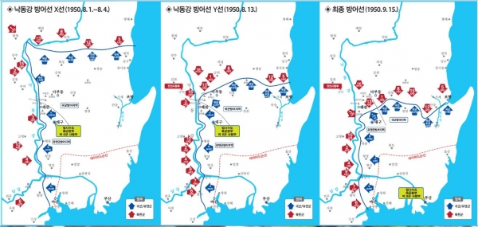

낙동강 전투 당시 보병부대
6.25전쟁 발발 두달째 서울은 함락이 되고 북한군의 저지를 위해 선발대로 파견되었던 스미스 부대의 대패로 북한군은 엄청난 속도로 남하를
하게 됩니다. 결국 남한은 전 국토의 90%를 북한군에게 빼앗겼고 국군과 유엔군은 마지막 보류지 부산을 어떻게든 사수하기 위해 최후의 결전을
벌이게 됩니다. 이 방어선을 낙동강 방어선이라고 불리며 워커라인(Walker Line)이라고도 불립니다.
낙동강 방어선은 남해안의 마산으로부터 북쪽으로 낙동강을 따라 낙둥리까지 약 160km에 이르고, 동해안까지 약 80km의 산악 지대를 연결하는
선으로 이루어져 있습니다. 방어선 서쪽은 낙동강, 북측은 높은 산악지대로 이루어저 방어에 유리한 조건이였고 이들은 낙동강 전선마저 뚫리게 된다면
부산은 점령당하고 대한민국은 결국 공산화가 되기에 55일간 필사적으로 맞서 싸우게 됩니다.

낙동강 방어선 진행과정 지도
더 이상 물러설 곳이 없는 국군과 유엔군은 낙동강을 최후의 방어선으로 결정하고 북한군을 상대로 결사항전을 벌입니다. 당시 미 제8군 사령관 이였던 워커장군은 일단 낙동강 전선에서 북한군의 전진을 저지하고, 반격의 때를 기다리다가 북한군을 몰아내 반격을 할 작전을 구상합니다. 최후의 방어선 이였던 만큼 유엔군 사령부는 부대 특성을 고려해 각 부대마다 최적의 작전 책임지역을 분활했는데 강력한 화력과 기동력을 보유한 미군(제 1기병사단, 24사단, 25사단)은 낙동강변 일원 개활지, 낙동강 상류 산악지대는 국군(1사단, 3사단, 6사단, 8사단 ,수도사단)이 담당하였습니다.낙동강 방어선은 국군과 UN군이 막지 못했다면 결국 대한민국은 완전히 함락될 수 밖에 없었던 전투였습니다. 55일간의 전투는 한쪽만 피해가 막심한 전투가 아닌 서로가 피튀기고 죽어가는 치열한 전투였습니다. 하지만 이 전투로 인해서 북한군의 정예 병력들은 대부분이 소멸되었고 맥아더 장군의 인천상륙작전의 성공으로 대 반격의 기회를 엿보게 될 수 있었던 전투가 됩니다. 낙동강 전선에서 우리 영웅들의 희생이 없었더라면 지금의 자유 민주주의 대한민국은 존재하지도 않았을겁니다. 하지만 이들의 고귀한 희생과 헌신덕에 북한군을 막아낼 수 있었고 지금의 대한민국이 존재할 수 있었다 라고 자부할 수 있는 전투라고 볼 수 있습니다.
참고자료
[명작다큐] 속수무책으로 밀려버린 전선. 최후의 방어선 낙동강을 사수하라. 세계 100대 다큐멘터리 선정 "한국전쟁 10부작" | 3부 폭풍 KBS 20100619 방송
행정안전부 국가기록원 - 낙동강 방어선